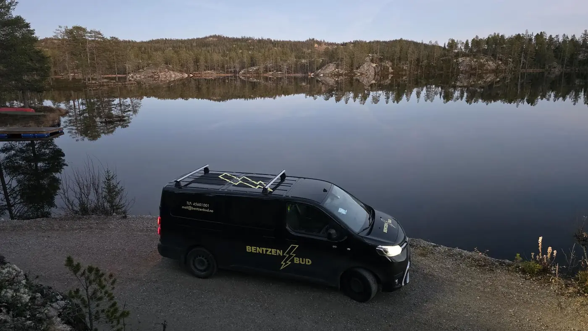

Transport · Oslo og omegn
Din pålitelige partner for bud og transport.
Med våre pålitelige budbiltjenester henter vi sendingen din etter avtale og leverer til ønsket tid. Hold deg oppdatert underveis med våre erfarne sjåfører.
45 60 10 01Direkte til oss
OsloOg omegn
FrysebilKjøl og frys
EkspressNår tiden teller

Rutetapen ruller – sendingene går
Tjenester
Det vi frakter
Fra en liten pakke til større varer, og fra kjølevarer til flyttelass. Vi tar hele oppdraget.
Slik jobber vi
Henting etter avtale
Du bestiller, vi henter når det passer og leverer til ønsket tid. Underveis holder vi deg oppdatert.
- Bestilling på telefon eller e-post.
- Henting etter avtale.
- Levering til avtalt tid.
- Oppdatering underveis.
Referanser
Vi har kjørt for
Både privatpersoner og bedrifter i Oslo-området.
| Type kunde | Typisk oppdrag |
|---|---|
| Butikk og servering | Frysebil med faste ruter. |
| Kontor | Dokumenter og pakker med kort varsel. |
| Privat | Flytting og store leveranser. |
| Helse | Transport av varer med temperaturkrav. |
Skal noe hentes i dag?
Ring, så avtaler vi henting og levering.